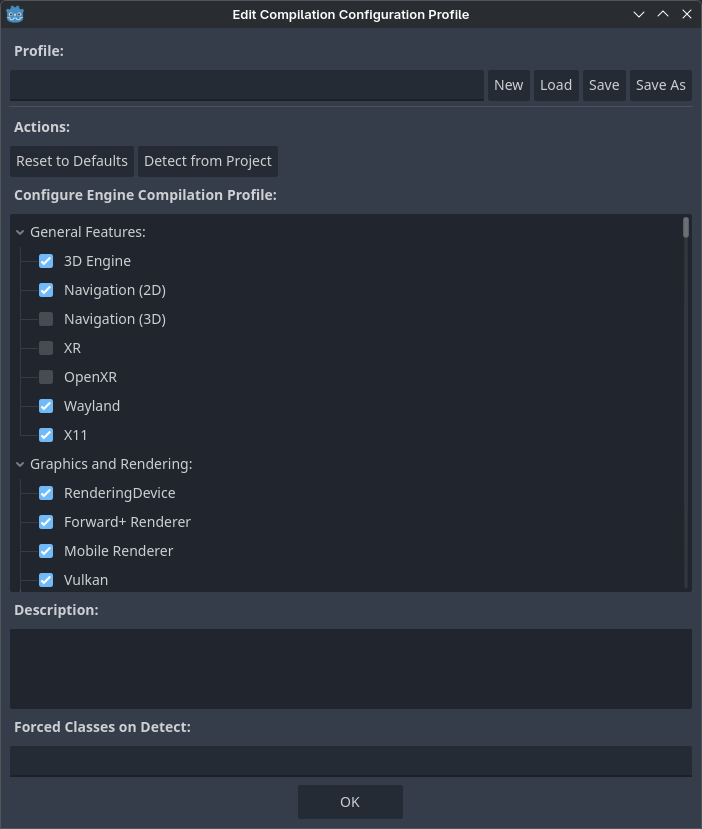

Using the engine compilation configuration editor
Godot comes with a large set of built-in features. While this is convenient, this also means its binary size is larger than it could be, especially for projects that only use a small portion of its feature set.
To help reduce binary size, it is possible to compile custom export templates with certain features disabled. This is described in detail in Optimizing a build for size. However, determining which features need to be disabled can be a tedious task. The engine compilation configuration editor aims to address this by providing an interface to view and manage these features easily, while also being able to detect the features currently being used in the project.
The allows you to create and manage build profiles for your Godot project.
From now on, you have two possibilities:
View the list and manually uncheck features that you don't need.
Use the button to automatically detect features currently used in the project and disable unused features. Note that this will override the existing list of features, so if you have manually unchecked some items, their state will be reset based on whether the project actually uses the feature.

Opening the Engine Compilation Configuration Editor
Once you click , the project detection step will run. This can take from a few seconds up to several minutes depending on the project size. Once detection is complete, you'll see an updated list of features with some features disabled:

Updated features list after using feature detection (example from the 3D platformer demo)
Warning
Unchecking features in this dialog will not reduce binary size directly on export. Since it is only possible to actually remove features from the binary at compile-time, you still need to compile custom export templates with the build profile specified to actually benefit from the engine compilation configuration editor.
You can now save the build profile by clicking Save As at the top. The build profile can be saved in any location, but it's a good idea to save it somewhere in your project folder and add it to version control to be able to go back to it later when needed. This also allows using version control to track changes to the build profile.
The build profile is a JSON file (and .gdbuild extension) that looks like this
after detection in the above example:
{
"disabled_build_options": {
"disable_navigation_3d": true,
"disable_xr": true,
"module_godot_physics_3d_enabled": false,
"module_msdfgen_enabled": false,
"module_openxr_enabled": false
},
"disabled_classes": [
"AESContext",
...
"ZIPReader"
],
"type": "build_profile"
}
This file can be passed as a SCons option when compiling export templates:
scons target=template_release build_profile=/path/to/profile.gdbuild
The buildsystem will use this to disable unused classes and reduce binary size as a result.
Limitations
The functionality relies on reading the project's scenes and scripts. It will not be able to detect used features in the following scenarios:
Features that are used in GDScripts that are procedurally created then run at runtime.
Features that are used in expressions.
Features that are used in GDExtensions, unless the language binding allows for defining used classes and the extension makes use of the functionality. See GH-104129 for details.
Features that are used in external PCKs loaded at runtime.
Certain edge cases may exist. If unsure, please open an issue on GitHub with a minimal reproduction project attached.
See also
You can achieve further size reductions by passing other options that reduce binary size. See Optimizing a build for size for more information.